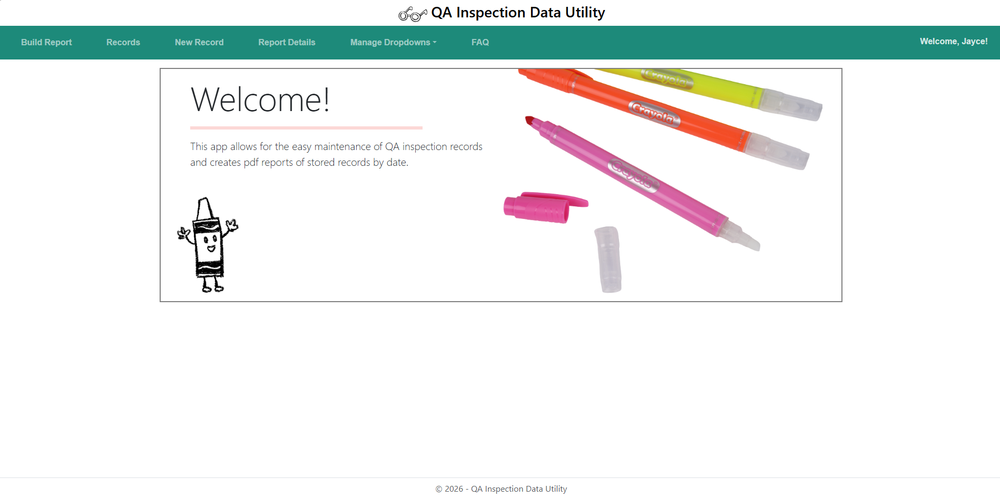
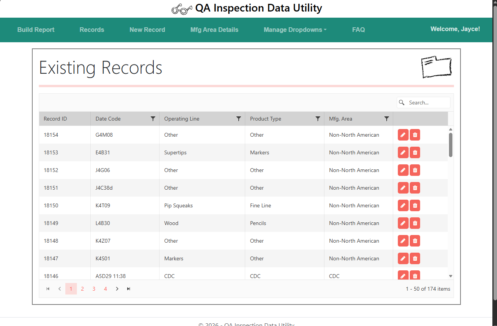
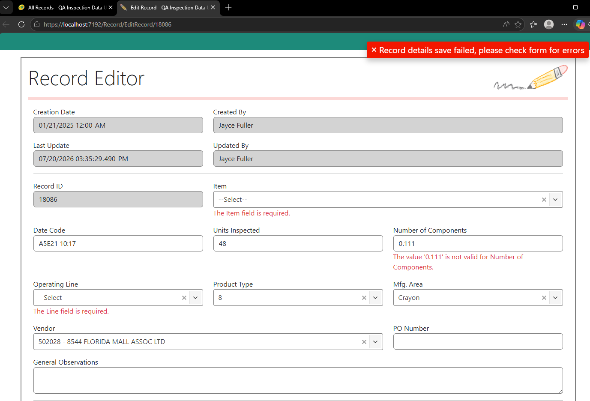
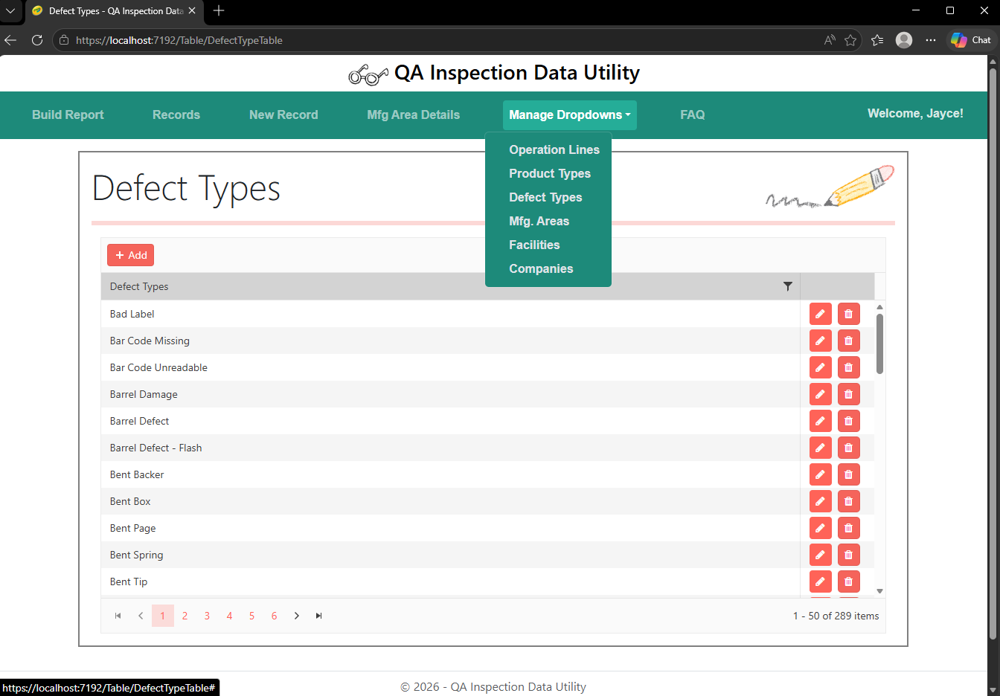

An internal web app developed to assist the quality assurance team at the company Crayola. Designed to allow efficient, intuitive record keeping of defects found in their manufacturing facilities. All dropdown fields can be easily managed by a website admin without needing to know any code.







